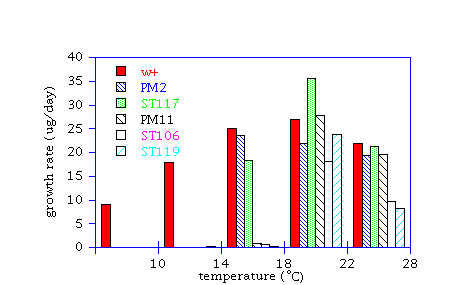

Chilling sensitive mutants of ArabidopsisJane C. Schneider*, Suzanne Hugly and Chris R. Somerville#
Michigan State University
*National Renewable Energy Laboratory
#Carnegie Institution of Washington AbstractTwenty one mutants of Arabidopsis thaliana were isolated that developed chlorosis or necrosis upon incubation at low temperature (10C - 15C). Crosses among mutants in different phenotypic classes showed that mutants in three of four classes were found in a small number of loci.Key-word index: Arabidopsis thaliana, Brassicaceae, genetic, mutant, chilling-sensitivity, cold-sensitivity IntroductionThe term "chilling sensitivity" has been used to describe many types of physiological damage produced at low, but not freezing, temperatures. Typical chilling damage is wilting, necrosis, chlorosis or leakage of ions from cell membranes (Lyons, 1973). Many targets for the primary site of injury due to chilling temperatures have been proposed; the theory that membrane properties are affected by chilling as a function of the proportion of phosphatidylglycerol that contains saturated fatty acids has gained support by recent experiments that genetically alter the fatty acid composition of higher plant lipids (Wolter, Schmidt & Heinz 1992, Murata, et al 1992). Alterations in the amount of polyunsaturated fatty acids have also been shown to affect chilling sensitivity (Kodama, et al 1994, Wada, Gombos & Murata 1994, Miquel, et al 1993, Hugly and Somerville 1992). The manifestation of chilling sensitivity that is elicited by these alterations in fatty acid composition occurs gradually during the chilling treatment or only upon reexposure to normal temperatures, whereas the phenotypic effects of chilling on species of tropical or semitropical origin is often apparent within hours or days (Lyons, 1973). Another hypothesis holds that several physiological deficiencies, perhaps in addition to fatty acid composition of membranes, contributes simultaneously to produce chilling damage. For instance, some physiological processes and enzymes in sensitive plants are less active than expected at chilling temperatures, implying that the cell dies because of accumulated defects in metabolism or an imbalance in metabolic pathways (Graham and Patterson 1982).In this study chilling sensitive mutants of the resistant plant Arabidopsis thaliana were isolated and genetically characterized in order to ascertain the number of loci that can contribute to the chilling sensitive phenotype.
Materials and MethodsPlant materials and growth conditions. Plants were raised in a growth chamber under continuous fluorescent illumination from cool-white bulbs (70 - 100 micromols photons m-2 s-1) on a mixture of permiculite: vermiculite: sphagnum (1:1:1) irrigated with mineral nutrients. Chilling- sensitive mutants were identified in three independent ethyl methyl sulfonate (EMS)- mutagenized M2 populations of Columbia seed by growing the plants at 22C for two weeks, then shifting to 10C or 15C. Plants developing symptoms of chilling injury (necrosis or chlorosis) within one week were immediately transferred to 22C and grown to maturity. All crosses with chilling sensitive progeny were repeated several times in both directions to reduce the possibility that the results were due to self- fertilization.Growth rate. To determine the critical temperature for growth of the class 1 mutants, plants were grown at 22C until 7 days old. Pots were then transferred to growth chambers set at different temperatures. Five plants were removed and weighed separately every 3 days for 15 days. The average weight was plotted against the number of days at the chilling temperature, then the growth rate was calculated from the linear section of the graph.
Results and DiscussionChilling sensitive mutants in Arabidopsis were isolated from three independent M2 populations. One chilling sensitive mutant, PM11, has been previously described (Schneider, Neilsen & Somerville, in press; Hugly, et al 1990) and has been assigned the locus name chs1; mutant PM2 was also identified during this previous screening. Of 20,000 M2 plants examined in the current study, 21 mutants were identified that appeared normal at 22C and developed necrosis or chlorosis only when shifted to lower temperatures.The chilling sensitive mutants fall into four phenotypic classes. Class 1 mutants first turn yellow, wilt and eventually die (Hugly, et al 1990). Older leaves of class 2 mutants show the same response, but younger leaves of the rosette are completely healthy. Class 3 mutants develop yellow patches which are not always contiguous and the veins remain green. In class 4, the part of each leaf closest to the center of the rosette turns yellow. Plants in classes 2, 3, and 4 eventually flowered and set seed after several weeks at the chilling temperature. Class 1 mutants die after three days exposure to chilling temperatures and cannot be rescued after this time by a return to the normal growth temperature. Scanned photographs of representatives from each class are available from in the image directory of AAtDB (http://weeds.mgh.harvard.edu): Class 1, chs1-1 (PM11), is in file cs-3097.jpeg; chs1-2 is in file st106.gif; Class 2, chs4-1 (ST13), is in file st13.gif; Class 3, chs5 (ST34), is in file st34.gif; and Class 4, (chs11) (ST36), is in file st36.gif. The URL address is, for example, gopher://weeds.mgh.harvard.edu/I9/arabidopsis/image/st13.gif. In addition, seeds will be available from the Arabidopsis Biological Resource Center (ABRC) at Ohio State (614-292-9371 for seed orders, 614-292-0603 FAX, seeds@genesys.cps.msu.edu). Mutants were backcrossed to wild type and the phenotype of the heterozygous F1 plants were scored to assess recessiveness or dominance of the mutation (see Table 1). Most of the mutants were recessive; ST117 and PM2 were dominant. All mutants except ST64 and ST119 segregated in a manner (3:1) which indicates that a mutation at a single locus is responsible for the mutant phenotype. Segregation of ST64 and ST119 resulted in more wild type plants than predicted; mutations in two loci may be required for the sensitive phenotype.
Table 1.Segregation of chilling-sensitive phenotype in F2 progeny of mutants crossed towild type parent. Strains from three classes were assigned mutant loci based on the results ofcomplementation tests between strains as discussed in text. R = recessive, D = dominant, M2 =batch of mutagenized seed from which the mutant strain was obtained.Segregation Mutant strain, locus M2 batch dominance resistant sensitive, X^2 (a) Class 1 Plant dies ST106 (chs1-2) 3 R 79 28 0.1 PM11 (chs1-1) 1 R 294 87 0.9 b ST117 (chs2-2) 3 D 55 145 0.7 PM2 (chs2-1) 1 D 19 59 0.0 ST119 (chs3) 3 R 205 45 6.5 Class 2 Old leaves die ST13 (chs4-1) 2 R 185 51 1.5 ST35 (chs4-2) 2 R 137 49 0.2 ST64 (chs4-3) 2 R 405 64 32.2 Class 3 Chlorotic patches ST34 (chs5) 2 R 37 10 0.4 ST39 (chs6-1) 2 R 73 23 0.1 ST48 (chs6-2) 2 R 70 16 1.9 ST83 (chs6-3) 3 R 171 49 0.9 Class 4 Chlorotic middle ST23 (chs7) 2 R 136 44 0.0 ST25 (chs8) 2 R 29 10 0.0 ST27 (chs9) 2 R 162 70 3.3 ST28 (chs10) 2 R 169 69 2.0 ST36 (chs11) 2 R 53 17 0.0 ST45 (chs12) 2 R 14 6 0.3 ST74 (chs13) 2 R 104 31 0.3 ST88 (chs14) 3 R 182 65 0.2 ST115 (chs15) 3 R 28 10 0.0a. Predicted ratio of 3:1 (resistant:sensitive) for recessive and 1:3 (resistant:sensitive)for dominant mutants. At P = 0.05, X^2 of 3.84 or above would lead to rejection ofthe hypothesis of a single recessive nuclear mutation. b. (Hugly, et al 1990). In order to ascertain the number of complementation groups giving rise to each phenotype, mutants were crossed to each other within classes. Within class 1, PM11 and ST106 are in the same complementation group. These mutants are not siblings, as they were derived from two independent batches of mutagenized seed (RM2 batchS in Table 1). Complementation between Class 1 mutant strains ST117 and PM2 could not be determined since they have dominant mutations. No resistant plants wre found in an F2 population from a cross between PM2 and ST117, thus they are members of a single locus. The other recessive mutant in this class, ST119, complements PM11 and ST106; in addition, resistant plants arise in the F2 populations from crosses between either PM11 or ST119 and PM2 or ST117. Thus, three complementation groups were found for the five mutants showing the Class 1 phenotype. Crosses between mutants in class 2, or between PM11 or ST106 and class 2 result in sensitive F1 plants. The F1 phenotype implies that Class 2 mutants are in the same complementation group as PM11 and ST106, in which case all F2 progeny should be sensitive. However, resistant plants arise in the F2 generation, although there are fewer than expected for independent segregation of two recessive mutants (data not shown). Class 3 mutants, therefore, are possibly in the same complementation group as PM11 and ST106. Mutants in class 3 fall into two complementation groups: ST39, ST48 and ST83 are in one and ST34 is in another. In contrast to the above two groups, in which the same loci were mutated repeatedly to generate the sensitive phenotype, the nine mutants in Class 4 are in different complementation groups. In order to determine the critical temperature for chilling damage in class 1 mutants, growth rates were measured upon a shift from 22C to a range of temperatures from 10C to 28C. As seen in figure 1, three isolates, PM11, ST119 and ST106, ceased growth when shifted to 18C or below. The growth rate of PM11 at different temperatures has been measured previously (Hugly, et al 1990) and, similarly, was found to decrease at 20C and to cease at 18C. The dominant mutants, PM2 and ST117, grew at 18C but ceased growth at 14C. As with PM11, these mutants could be rescued if transferred back to 22C within three days of exposure to chilling temperatures. The critical temperature for development of a phenotype in the mutants which do not die was harder to assess. In many of the mutants, a weak phenotype appeared at one temperature level and a strong phenotype at the next lower level. Mutants ST13, ST39, ST48 and ST35 developed a strong mutant phenotype at 18C; mutant ST64 at 14C. The other mutants tested (ST23, ST25, ST27, ST28, ST34, ST45, ST36, ST74, ST83, ST88 and ST115) did not develop a strong phenotype unless chilled at 10C.
Figure 1The growth rate of class 1 mutants (PM2, ST117, PM11, ST106, ST119) and wild type (w+) after a shift from 22C to various temperatures. Previous studies with chs1-1 (PM11) suggested that newly- synthesized chloroplast-localized proteins fail to accumulate after chilling (Schneider, et al, in press). In vitro import of proteins into the chloroplast was normal in mutant cells at low temperatures; an alternate possibility is that there is a defect in chaperonins that assisst folding of proteins after import. Protein synthesis in class 1 and 2 mutants was investigated by labeling leaves at normal temperatures, or after three days of chilling, with 35S-amino acids. The pattern of change in labeled proteins is the same as that previously noted in chilled PM11 leaves for mutants ST106, PM2 and ST117. The pattern in mutants ST64 and ST35 is similar but weaker, and the pattern in ST13 is unchanged in chilling conditions (data not shown). These results suggest that Class 1 and Class 2 mutants affect the same process, to which at least three loci contribute. ConclusionsTwenty one chilling sensitive mutants were sorted into four phenotypic classes. Analysis of these chilling sensitive mutants showed that mutations that lead to necrosis upon chilling at 10C (Class 1 and 2) in an otherwise chilling resistant plant fall into a small number of loci. These mutants all show similar defects in the synthesis or stability of new proteins at the chilling temperature. Likewise, mutations that cause chlorotic patches (Class 3) are probably caused by a defect a small number of genes. For each complementation group, mutants were isolated from independent batches of seeds; this suggests that most of the loci which could contribute to the phenotype are represented. On the other hand, changes in a great number of loci resulted in yellowing of young tissue (Class 4) at chilling temperatures.AcknowledgmentsThis work was supported in part by a grant from the U.S. Department of Energy (DE-FG02-90ER20021) and a National Science Foundation Fellowship (J.C.S).ReferencesGraham, D. & Patterson, B. D. (1982) Responses of plants to low, nonfreezing temperatures: proteins, metabolism, and accumulation. Ann. Rev. Plant Physiol. 33, 347-372.Hugly, S., McCourt, P., Browse, J., Patterson, G. W. & Somerville, C. (1990) A chilling sensitive mutant of Arabidopsis with altered steryl-ester metabolism. Plant Physiol. 93, 1053-1062. Hugly, S. & Somerville, C. (1992) A role for membrane lipid polyunsaturation in chloroplast biogenesis at low temperature. Plant Physiol. 99, 197-202. Kodama, H., Hamada, T., Horiguchi, G., Nishimura, M. & Iba, K. (1994) Genetic enhancement of cold tolerance by expression of a gene for chloroplast w-3 fatty acid desaturase in transgenic tobacco. Plant Physiol. 105, 601-605. Lyons, J. M. (1973) Chilling injury in plants. Ann .Rev. Plant Physiol. , 445-466. Miquel, M., James, D. Jr, Dooner, H & Browse, J. (1993) Arabidopsis requires polyunsaturated lipids for low-temperature survival. Proc. Nat. Acad. Sci. 90, 6208-6212. Murata, N., Ishizaki-Nishizawa, O., Higashi, S., Hayashi, H., Tasaka, Y. & Nishida, I. (1992) Genetically engineered alteration in the chilling sensitivity of plants. Nature 356, 710-713. Wada, H., Gombos, Z. & Murata, N. (1994) Contribution of membrane lipids to the ability of the photosynthetic machinery to tolerate temperature stress. Proc. Nat. Acad. Sci. 91, 4273-4277. Wolter, F. P., Schmidt, R. & Heinz, E. (1992) Chilling sensitivity of Arabidopsis thaliana with genetically engineered membrane lipids. EMBO J. 11, 4685-4692.
|
{kind=link}
{kind=link}
{kind=link}
{kind=link}
{kind=link}